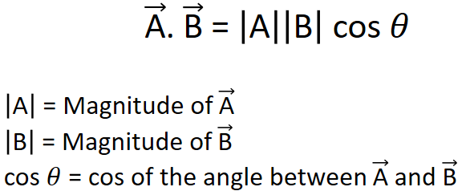

HOME BLOG EBOOKS ABOUT CONTACT SHOP
Vectors can be multiplied in 2 possible ways; the Dot product and the Cross product. The dot product of 2 vectors results in a scalar quantity and the cross product of 2 vectors results in another vector. For this reason, the dot product and the cross product are also known as the scalar product and the vector product respectively.
The dot product between 2 vectors is denoted as (read as A dot B). Mathematically, the dot product can be expressed as:

The dot product can be intuitively thought of as a measure of the similarity of two vectors or how well they work together with one another. Consider our “forces on a block” example again.
In the first figure, the forces A and B are in the same direction and hence they are working together to move the block. Therefore, the dot product is maximum in this case. In the second figure, the force B is applied at an angle θ to the force A, this obviously is not the best method to move the block. The force B is not contributing to the motion of the block as much as it did in the first case, hence the dot product is a smaller value, but greater than zero. In the third figure, the force B is applied orthogonally to the force A, so it doesn’t contribute to moving the block (in the direction of A) at all, hence the dot product here is zero. In the fourth example, the force B is applied in opposite direction to force A, which means force B is not only not contributing to the motion of the block, but it’s actually negating the effect of force A. So, the dot product in this case is negative.
You can verify these properties using any 2 random vectors.